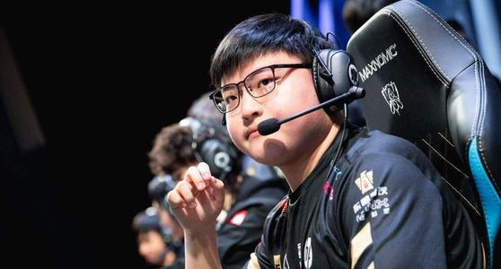
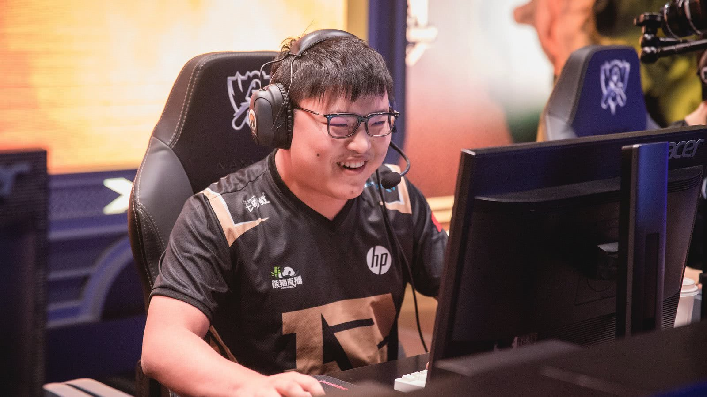
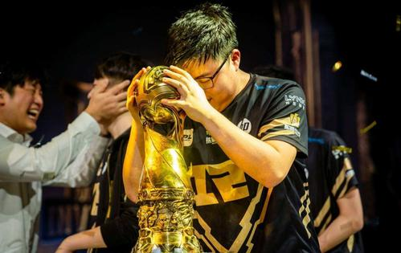

简自豪
简自豪，网络ID：Uzi，1997年3月29日出生于湖北省宜昌市，是游戏《英雄联盟》中国区的电竞职业选手，原SH皇族电子竞技俱乐部ADC选手，现效力RNG战队并担任队内ADC一职。
重要事件
- 2013年Uzi第一次进入全球总决赛，在预选赛上使用暗夜猎手VN在比赛一战封神，却在决赛惜败SKT获得S3英雄联盟世界总决赛亚军。
- 2014年再次进入S系列比赛获得S4英雄联盟世界总决赛亚军。
- 2015年S5赛季初加入OMG无缘世界总决赛，春季赛结束后。
- 2016年夏季转会期时转会到RNG。
- 2017年12月11日，UZI卫冕全明星solo赛冠军；随LPL梦之队3-2战胜LMS梦之队夺得2017英雄联盟全明星赛冠军。
- 2018年4月28日，简自豪随RNG以3-1战胜EDG获得2018年LPL春季赛冠军。
- 2019年12月2日，UZI带领战队获得首届LPL全明星周末赛冠军。
- 2020年6月3日，简自豪宣布正式退役。
主要战绩
- 2013年，S3皇族对阵omg，他在草丛中遭遇敌方四人，边退边输出，通过精彩的操作被一战封神 。
- 2014年11月28日，SOLO精英挑战赛落幕 Uzi封王 。
- 2015年3月15日，LPL上OMG对Snake的比赛中UZI在OMG先输一局的情况下，第二局的比赛中发挥出色，怒拿19个人头 ，战胜Snake这是他在职业比赛中人头最多的一盘。
- 2016年，在LPL春季赛第六周的常规赛中，第一场比赛是领头羊QG对阵HYG，第一局Uzi祭出成名英雄薇恩，并且在最后一波团战中拿到五杀 。
- 2016年10月，在S系列赛历史上第一个完成200杀 。
- 2017年2月，英雄联盟选手1000杀排名出炉。其中四位LPL的选手上榜，其中Uzi排名第一，厂长排名第七。而大魔王Faker仅仅排在第四 。
- 2017英雄联盟全球总决赛小组赛第三日，RNG在与SSG的对决中抱团推进，皇子EQ框大，Uzi小炮三连跳爆炸输出carry全场，一波0换4，直接零封三星。10月21日S7八进四第三天，在前期被对手节奏牵制的情况下，RNG利用中期一波大龙团战扭转了局势，拿下大龙后Uzi小炮天秀操作丝血击杀FNC两人，配合大虫子和瑞兹团灭对手。
- 2018年4月15日在LPL春季赛上，RNG拿出了S7赛季的世界赛阵容应对SS，Uzi凭借着第二场的超神表现完成了自己职业生涯的2000次击杀，成为了全球LOL职业选手中首个完成这一成就的选手。在半决赛RNG与IG的对决中，Uzi连拿三局卡莎均完成超神成就。在第二局比赛中，Uzi的卡莎在前期取得了一定优势，并在双方团战中爆炸输出拿到五杀。
- 2018年9月2日LPL夏季赛常规赛RNG主场迎战JDG，30分钟双方爆发团战，时光闪现留Uzi的同时却被Uzi抓住机会光速秒掉，随后Uzi一人冲进3人的包围圈中以一敌三，最后斩获四杀。
- 2018年10月14日，2018英雄联盟全球总决赛RNG对阵GEN的比赛中，在游戏结束阶段Uzi使用卡莉斯塔击杀了Crown使用的艾瑞莉娅，并以此成为第一个在全球总决赛中总击杀数达到300的选手。
主要成就
| 获奖时间 | 获得奖项 |
|---|
| 2018-11-14 | Game Awards最佳电竞选手 （提名） |
| 2018-01-18 | “2017中国游戏风云榜”年度人气电竞选手 |
| 2017-11-26 | 全明星赛SOLO冠军 |
| 2017-11-26 | 年度最受欢迎选手 |
| 2017-11-26 | 年度最佳ADC |
| 2016-11-14 | 最受欢迎选手 |
| 2015-12-2 | 英雄联盟全明星 |
| 2014-12-13 | 最佳ADC |
| 2014-12-13 | 最佳年度MVP |
| 2014-11-29 | TGA《英雄联盟》SOLO精英挑战赛冠军 |
生活照



早年经历
2012年，因为家庭原因的简自豪搬家到了新的城市惠州，由于新搬家过来的学籍和转学的问题让他有了在家玩游戏的机会。天天在家玩游戏的他，在接触到了英雄联盟这个游戏的时候。他以惊人的适应能力迅速驰骋了这个游戏，在当时的四区战无不胜，迅速冲到了1700分。后来被陈芳辉（虎妞）发现并介绍到皇族战队，开始自己的职业生涯。